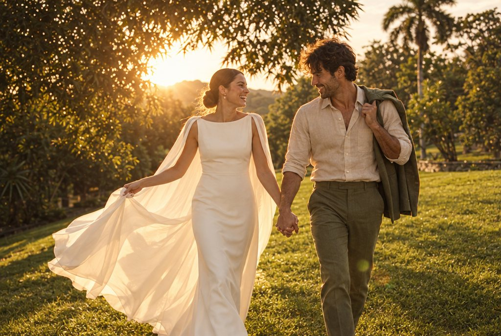
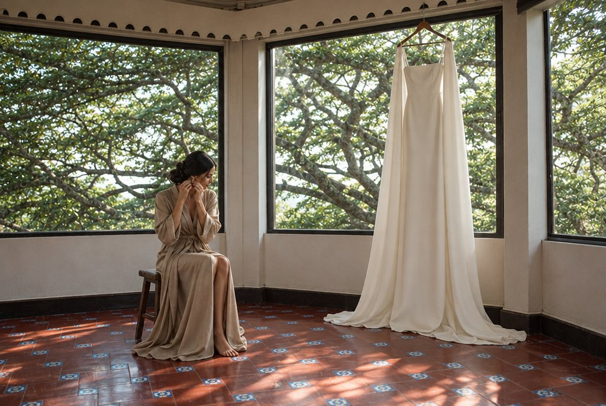
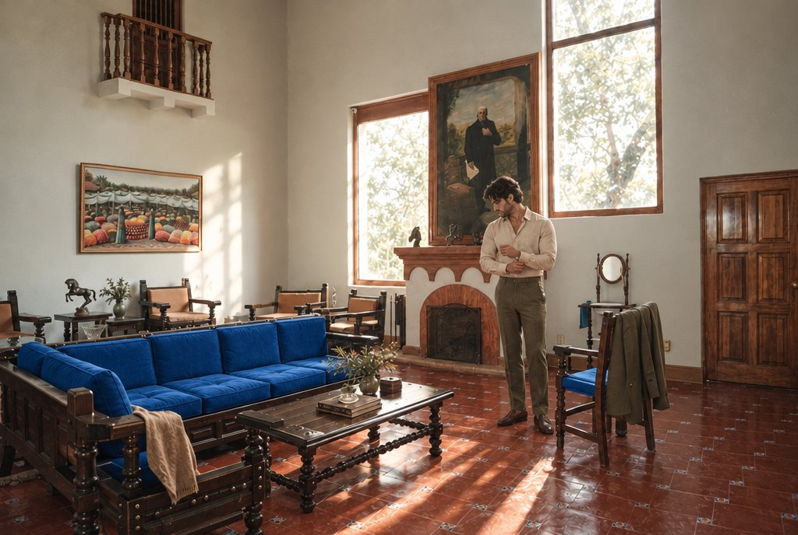
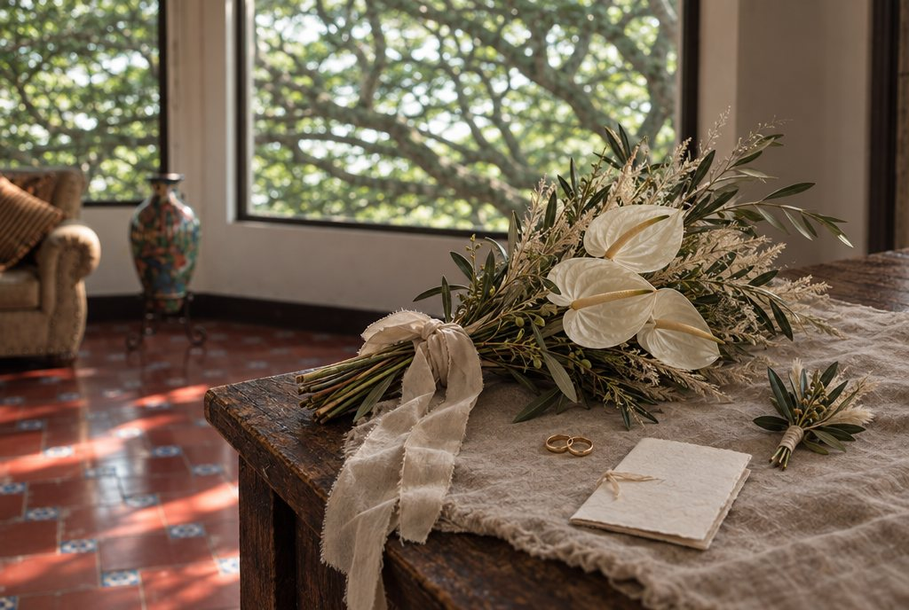
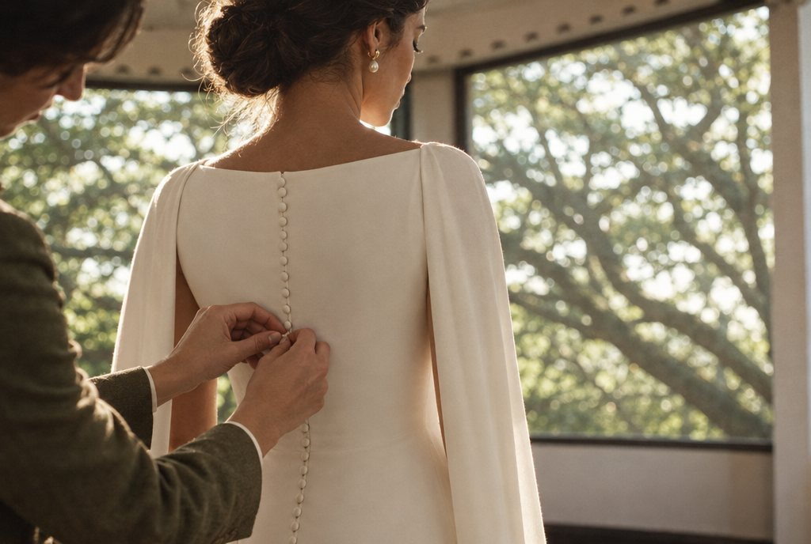
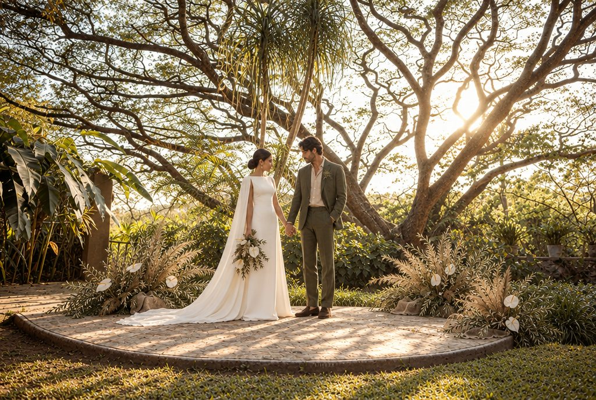
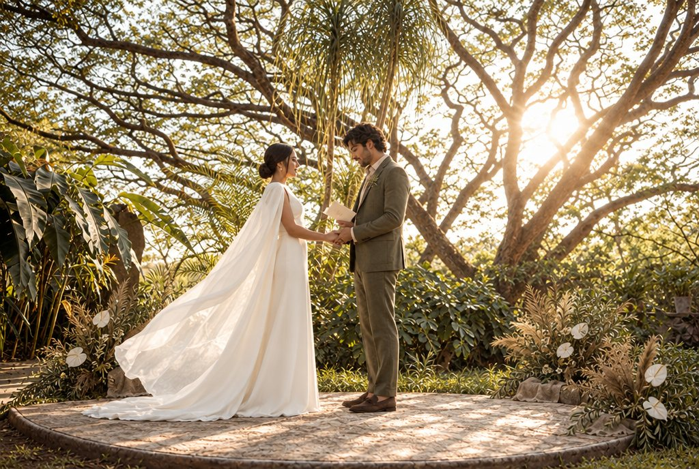
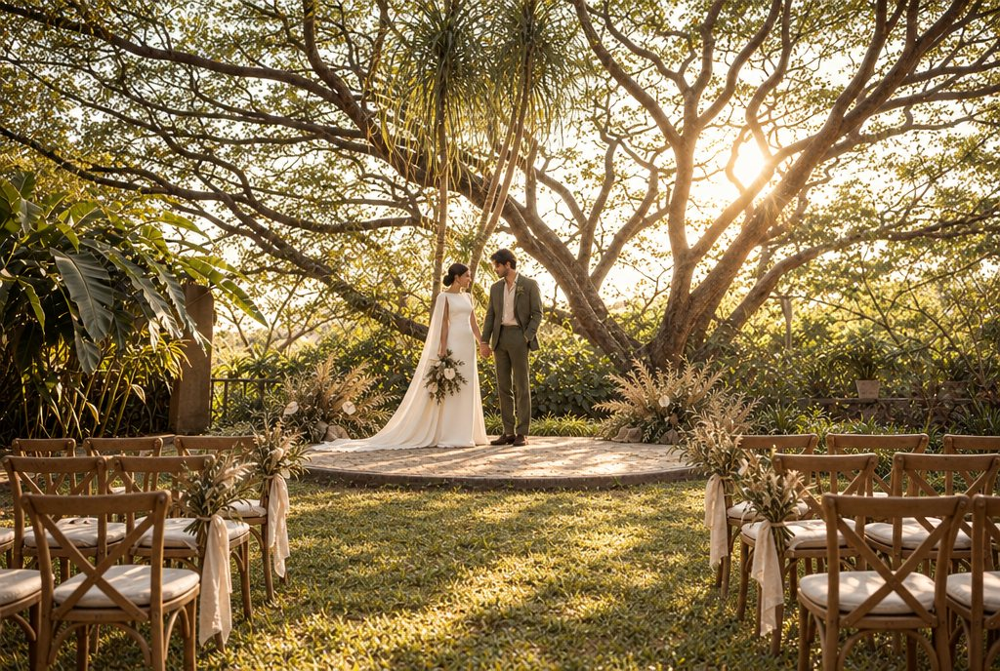
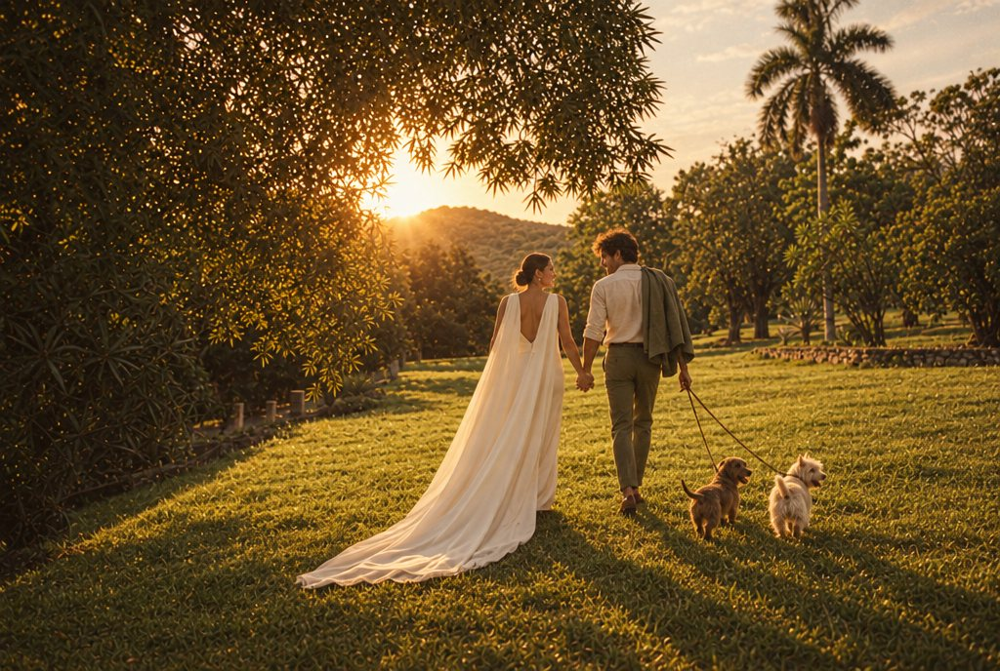
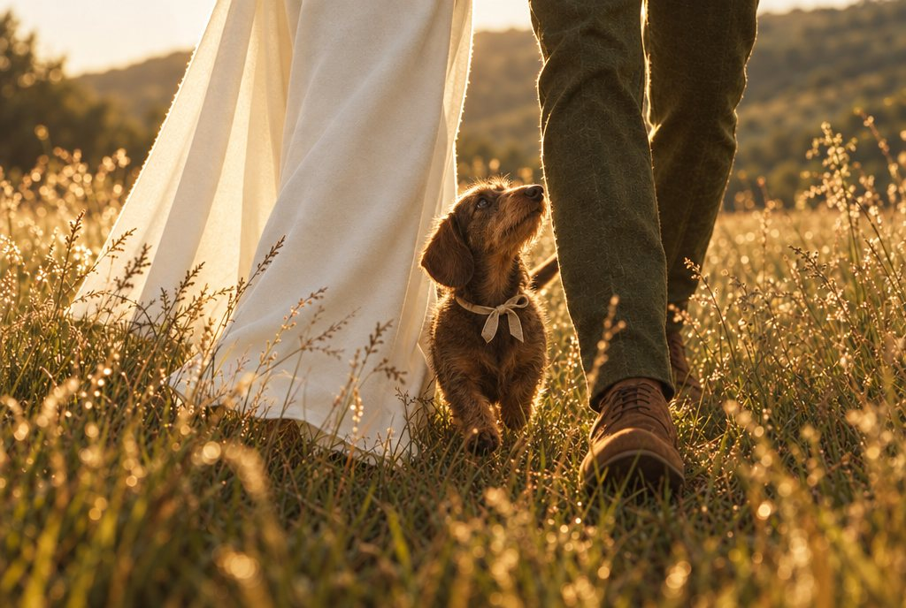

Todo gira alrededor del árbol del rancho: un samán centenario, el árbol de la lluvia, que en La Joya llaman la acacia. Es lujo orgánico: tonos de tierra, texturas naturales y la luz que se filtra entre las ramas. Tres momentos, en el orden que marca el sol: el arreglo en la casa frente al árbol, la ceremonia bajo su copa y la caminata por la pradera con el sol bajando sobre el cerro.
Paleta
Horario
| 15:30 a 16:00 | Getting ready en la recámara de los ventanales y en la sala doble altura |
| 16:00 a 16:15 | Ella termina de vestirse |
| 16:20 a 16:50 | Ceremonia en la acacia |
| 17:15 a 17:45 | Caminata en la pradera con vista al cerro |
Pastos secos, ramas de olivo, anturios blancos, musgo y piedra. Arreglos bajos y asimétricos, nada de arcos.
Pedimos tonos, no materiales. Novia en marfil, silueta columna con capa larga. Novio en verde olivo con camisa arena.
Luz de ventana en la casa, sol bajo a contraluz entre las ramas y hora dorada en la pradera. La puesta de sol cae cerca de las 18:00.
Ella se arregla en la recámara cuyos ventanales dan directo a la acacia, con el vestido colgado en la ventana. Él se viste en la sala doble altura, junto a la chimenea. Solo luz natural. Peinado y maquillaje de los modelos van antes de las 15:30.
Bata o conjunto en tono arena.
Camisa arena y pantalón olivo; el saco espera en una silla.

Referencias



Una ceremonia íntima sobre la plataforma redonda de piedra. Enfrente, dos bloques cortos de sillas de madera natural, unas doce, sin invitados, con un pasillo de pasto. Las sillas del pasillo llevan ramitos de olivo y pastos secos atados con lino crudo. El sol ya bajo entra entre las ramas y deja la luz moteada sobre la piedra. A los lados de la plataforma, arreglos bajos de pastos secos, olivo y anturios blancos.

Referencias


Ya casados, caminan por la pradera hacia el cerro con el sol de frente. Él se quita el saco y lo carga al hombro; ella deja que la capa arrastre sobre el pasto. Los acompañan dos perritos pequeños que corren entre el pasto. Nada posado: risas, manos, viento.
Dos razas pequeñas en tonos de la paleta, por ejemplo un salchicha café tostado y un terrier crema. Correas delgadas de piel natural y un moño de lino crudo.
Su dueño o un entrenador fuera de cuadro, agua y premios. Solo salen en esta escena.

Referencias
